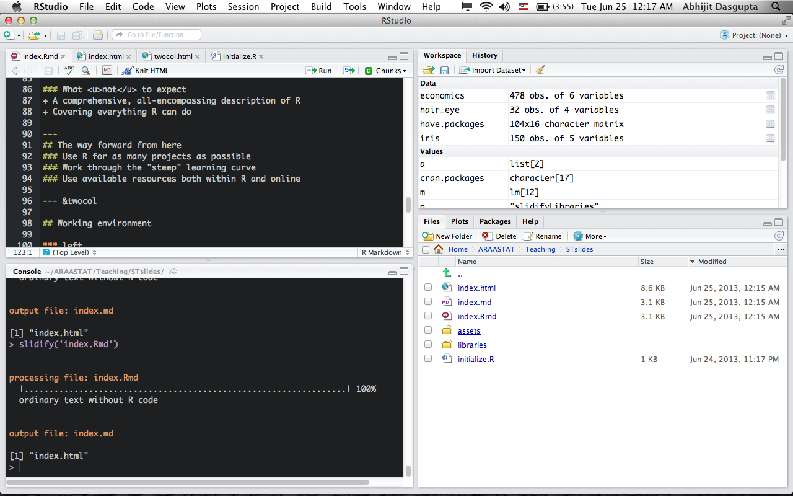
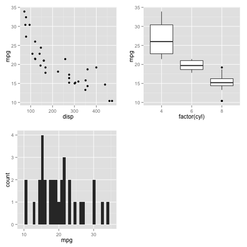
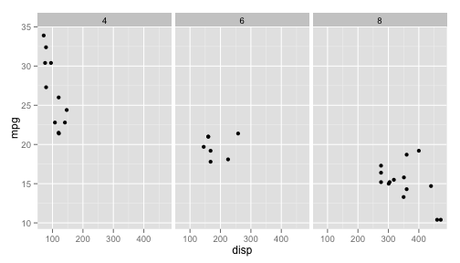

Introduction to R
Strategic Telemetry
Abhijit Dasgupta, PhD
DataXtract, LLC
Copyright
This document is intended for use by the attendees of this customized R training course offered by DataXtract, LLC. Any unauthorized use or copying is strictly prohibited. The information in this document is intended to be delivered in a classroom setting and is not complete without the associated interactions with the instructor.
© 2013 DataXtract, LLC
Introduction to R
About
Introduction to R
Abhijit Dasgupta, PhD
Abhijit Dasgupta, PhD is an experienced biostatician and data scientist with
over 20 years experience consulting in biomedical research, bioinformatics,
business and bioengineering. Maintains an active research portfolio at the
crossroads of statistics and machine learning, with over 40 peer-reviewed publications.
Has over 18 years experience in R, alongside other
statistical computing tools like SAS, Stata, Python and Matlab. Provides end-to-end
consulting, including study design, analysis plans, data munging, visualization,
modeling, prediction, reporting, presenting and grant writing.
A board member of Data Community DC, he coordinates the Statistical Programming DC meetup group
DataXtract, LLC
DataXtract, LLC is a Data Science consultancy providing data mining and analysis, visualization, modeling, statistical computing and R training services to a broad range of clients.
Introduction to R
Agenda
Part One (R)
- Setup and introductions
- Getting R and RStudio up and running
- An overview of R
- Data input and output
- Visualization
- Modeling
- Q & A and examples
Part Two (Python/R/MySQL)
- Setting up Python, R and MySQL to interact
- Using Python as glue
- Examples
Introduction to R
Expectations
What to expect
- Overview of R and how to get started with analytics using R
- Hands-on examples
- A launching pad for your adoption and use of R
What not to expect
- A comprehensive, all-encompassing description of R
- Covering everything R can do
Introduction to R
The way forward from here
Use R for as many projects as possible
Work through the "steep" learning curve
Use available resources both within R and online
Introduction to R
Working environment
R
- R 3.0.1
- Almost everything backward compatible to R 2.14.*
- RStudio
- Several packages
- Install and load into your working environment using
initialize.R
- Install and load into your working environment using
Python
- Python 2.7
- Complete scientific Python distributions
- Anaconda (preferred)
- Enthought
- Packages
- numpy, scipy, pandas, matplotlib, rpy2(?), pyRserve, sqlalchemy
Introduction to R
RStudio

Introduction to R
RStudio
- RStudio is an open-source Integrated Development Environment (IDE) for R
- RStudio is not a GUI
- Many features to aid R development
- Shameless plug: I'm writing a RStudio Cookbook
Keyboard shortcuts
- Alt-dash inserts <-
- Ctrl-1 moves cursor to source window
- Ctrl-2 moves cursor to console
- Ctrl-Enter sends current line/highlighted code to console
- Ctrl-L clears the console
Introduction to R
Introduction to R
What is R?
The 18th letter of the alphabet
Introduction to R
What is R?
- The premier open-source statistical software platform
- A platform for developing new statistical algorithms
- A platform which is extensible
- C, C++, Fortran
- A platform with over 4500 user-contributed packages
Introduction to R
R is the lingua statistica
-- Anthony Damico
Introduction to R
The question is not if R can do it, but how
-- Douglas Bates
Introduction to R
Why R?
- R is free (more specifically GPL3)
- R is powerful, flexible and often cutting-edge
- R can be accessed from SAS, SPSS, Stata, Python, Java
- Interfaces to R are available for Oracle, SAP HANA, Teradata, Netezza, Greenplum
Introduction to R
Why R?
- Standard and cutting-edge statistical modeling
- Flexible data munging
- High-quality visualizations
- Reproducible and automated reporting
- Increasingly, web-based content-rich graphics
Introduction to R
Let's get started
Introduction to R
Where are we?
- The first thing you want to do is contain all your project-related scripts in a folder
- All the R data files will be in this folder
getwd() # What is the current working directory?
setwd() # Set the working directory
What's here?
dir() # shows files in current directory
file.path() # creates a file path string
ls() # Shows objects in the current session
RStudio allows you to create "Projects" which hold everything nicely together along with Git functionality, if desired
Introduction to R
Banging head on wall???
Within R
helpor?help(data.frame)or?data.frame
Online
- Stack Overflow: r tag
- Twitter: #rstats
- R-Bloggers.com
Introduction to R
Some tips on R coding
- The R Style Guide by Google
- Comment character
#can be placed at the beginning or at the right of code - Statements are ended with return or semicolon (;)
- Names in R are quite liberal but it is recommended that you use common naming conventions
- First character letter, followed by letters, digits, underscores or periods
- Note that the period has some special meaning and is used often in R naming to separate object names (e.g. customer.name)
- It is recommended that variable names use underscores instead of dots especially when combining with databases
Introduction to R
Data structures in R
- In R, everything is an object
- All objects have a class
- All objects have a name
- Objects are created or changed through assignment operators
- An object’s class reflects what you can do with the object and the type and extent of information it contains
- Objects can be passed into functions as a parameter
Introduction to R
Assignments
x <- 1:5orx <- c(1,3,5,6): integerx <- 3.6orx <- c(2.5,4.3,9.9): numericBasic atomic types are
integer,numeric,character,complex,logical,dateVectors are 1-dimensional objects of same atomic type. R prefers vectors
v <- c(1,4,6,7.6)
- Matrices are 2-dimensional objects of same atomic type
A <- matrix(0, nrow=4, ncol=6)
B <- matrix(c(1,3,5,7,9,11,13,15,17,19), nrow=2, byrow=T)
Introduction to R
Matrices
- R is fundamentally a matrix-driven language like MATLAB.
- R has a variety of matrix manipulation functions
nrow(A)
ncol(A)
A[1,] # First row of A
A[,2] # Second column of A
A[3,4] # (3,4) element of A
A[1:2, c(2,5,6)] # a submatrix of A
A %*% B # matrix multiplication
- R starts counting at 1, not 0
Introduction to R
Matrices
- Some more functions
det(A)
solve(A) # Gives matrix inverse
solve(A,b) # Solves equation Ax=b
eigen(A)
svd(A)
- R can be compiled with high-performance LAPACK and BLAS linear algebra libraries
Introduction to R
The data.frame object
- The
data.frameis a special form of alist - A
listis a data structure that can contain heterogeneous types of data
L <- list(a=1:3, b=c('rhino','bear'), c = matrix(c(1,2,3,4),nrow=2))
Introduction to R
The data.frame object
- The
data.frameis the workhorse of R - A
data.frameis essentially a list of vectors of the same length- Each vector may be of a different type
- A
data.frameis represented as a table, with columns being the vectors - Think of a
data.frameas a collection of variables - You can manipulate a
data.framelike a matrixD[1,]orD[,1:2]- It is not a matrix
- You can extract variables
D$indexorD[,'index'](recall data frames have columnar representation)
- Data frames act like SQL tables
- You can join them (
merge) and append to them (cbind,rbind)
- You can join them (
Introduction to R
The factor type
- Factors are R's representation of categorical variables
- Factors look like vectors of characters, but they are not!!
gender = factor(c('M','M','F','M','F','F','F'))
levels(gender)
is.factor(gender)
is.character(gender)
as.numeric(gender)
- Internally, factors are represented as integers, with each integer corresponding to a level of the categorical variable
Introduction to R
Functions
Functions in R have the syntax
functionname <- function(inp1, inp2=3, ...){
statements
return(list of output objects)
}
- If the
returnstatement is absent, the function returns the last object created. ...signifies optional parameters- You would use this as
results <- functionname(inp1=x, inp2=4, inp3=9) - Functions are objects
Introduction to R
The R REPL
- R's console is a REPL (read-eval-print loop)
- You can type commands directly into the console
- Entering an object name prints out the object's value
a <- 1
a
## [1] 1
Introduction to R
The R REPL
- R's console is a REPL (read-eval-print loop)
- You can type commands directly into the console
- Entering an object name prints out the object's value
dir
## function (path = ".", pattern = NULL, all.files = FALSE, full.names = FALSE,
## recursive = FALSE, ignore.case = FALSE, include.dirs = FALSE,
## no.. = FALSE)
## .Internal(list.files(path, pattern, all.files, full.names, recursive,
## ignore.case, include.dirs, no..))
## <bytecode: 0x7f9f697ad078>
## <environment: namespace:base>
Introduction to R
The R REPL
L <- list(a = c(1, 3, 4, 6), b = c("Adam", "Eve"), c = matrix(c(1, 2, 3, 4),
nrow = 2))
L
## $a
## [1] 1 3 4 6
##
## $b
## [1] "Adam" "Eve"
##
## $c
## [,1] [,2]
## [1,] 1 3
## [2,] 2 4
Introduction to R
R packages
- R has over 5000 packages contributed by users
- CRAN (general)
- Bioconductor (bioinformatics)
- Omegahat (interfaces)
- Packages make our lives simpler
- Stand on the shoulders of giants (or simply, people)
- Conventions:
Hmisc::describeis the objectdescribein the packageHmisc - Packages are loaded into the current session using
library(pkgname)orrequire(pkgname)
Introduction to R
Getting started with data
Introduction to R
Importing data
- Delimited data with comma, tab, pipe using
read.table,read.csv,read.delim - Fixed width with
read.fwf - Excel with
gdata::read.xls,XLConnect::readWorksheet,xlsx::read.xlsx - SAS with
Hmisc::sas.get,foreign:read.ssd(both requiring SAS),sas7bdat::read.sas7bdat(for Windows sas7bdat files), or via conversion to Stata.dtafiles - SPSS with
foreign::read.sav - Stata with
foreign::read.dta - JSON with
rjson::fromJSON
Introduction to R
Importing data
- Databases
RODBC/RJDBC/DBI(general)sqldfRMySQL(not on Windows)RMongo
Introduction to R
Programming
Introduction to R
Conditionals
R has a general if-else paradigm available
if(condition) {
statements
} else if {
statements
} else {
statements
}
Conditions include equality (==), inequalities (< or <=), or (|), and (&) and negation (!)
If the conditional only applies to a vector, R provides a ifelse function:
x <- ifelse(y > 0, 'Positive','Negative')
Introduction to R
Loops
R provides
forloopswhileloopsrepeatloops
for(i in 1:25){
y[i] <- 3*x[i]+5
}
for(u in letters){
print(u)
}
It is better to avoid explicit looping, if possible
Introduction to R
'Apply'ing yourself
R provides a set of "apply" functions:
applyworks on arrays
apply(X,1, mean) # Mean of the rows
apply(X, 2, sd) # Std. Dev. of the columns
lapplyworks on lists- It also works on
data.frameobjects, by column
- It also works on
lapply(L, FUN) # applies FUN to every element of L
sapplyislapplywith the output simplified
Introduction to R
Set operations
union, intersection, %in%, setdiff, setequals
Pattern matching
grep, grepl, regexpr, sub, gsub
Type verification
is.numeric, is.factor, is.list, is.data.frame, is.character
Type conversion
as.numeric, as.factor, as.data.frame, as.character
Introduction to R
Looking at data frames
str(mtcars)
## 'data.frame': 32 obs. of 11 variables:
## $ mpg : num 21 21 22.8 21.4 18.7 18.1 14.3 24.4 22.8 19.2 ...
## $ cyl : num 6 6 4 6 8 6 8 4 4 6 ...
## $ disp: num 160 160 108 258 360 ...
## $ hp : num 110 110 93 110 175 105 245 62 95 123 ...
## $ drat: num 3.9 3.9 3.85 3.08 3.15 2.76 3.21 3.69 3.92 3.92 ...
## $ wt : num 2.62 2.88 2.32 3.21 3.44 ...
## $ qsec: num 16.5 17 18.6 19.4 17 ...
## $ vs : num 0 0 1 1 0 1 0 1 1 1 ...
## $ am : num 1 1 1 0 0 0 0 0 0 0 ...
## $ gear: num 4 4 4 3 3 3 3 4 4 4 ...
## $ carb: num 4 4 1 1 2 1 4 2 2 4 ...
Introduction to R
Looking at data frames
summary(mtcars[, 1:4])
## mpg cyl disp hp
## Min. :10.4 Min. :4.00 Min. : 71.1 Min. : 52.0
## 1st Qu.:15.4 1st Qu.:4.00 1st Qu.:120.8 1st Qu.: 96.5
## Median :19.2 Median :6.00 Median :196.3 Median :123.0
## Mean :20.1 Mean :6.19 Mean :230.7 Mean :146.7
## 3rd Qu.:22.8 3rd Qu.:8.00 3rd Qu.:326.0 3rd Qu.:180.0
## Max. :33.9 Max. :8.00 Max. :472.0 Max. :335.0
Introduction to R
Looking at data frames
library(Hmisc)
Hmisc::describe(mtcars[, 1:2])
## mtcars[, 1:2]
##
## 2 Variables 32 Observations
## ---------------------------------------------------------------------------
## mpg
## n missing unique Mean .05 .10 .25 .50 .75
## 32 0 25 20.09 12.00 14.34 15.43 19.20 22.80
## .90 .95
## 30.09 31.30
##
## lowest : 10.4 13.3 14.3 14.7 15.0, highest: 26.0 27.3 30.4 32.4 33.9
## ---------------------------------------------------------------------------
## cyl
## n missing unique Mean
## 32 0 3 6.188
##
## 4 (11, 34%), 6 (7, 22%), 8 (14, 44%)
## ---------------------------------------------------------------------------
Introduction to R
Subsetting
subset(mtcars, mpg < 20 & cyl == 6)
## mpg cyl disp hp drat wt qsec vs am gear carb
## Valiant 18.1 6 225.0 105 2.76 3.46 20.22 1 0 3 1
## Merc 280 19.2 6 167.6 123 3.92 3.44 18.30 1 0 4 4
## Merc 280C 17.8 6 167.6 123 3.92 3.44 18.90 1 0 4 4
## Ferrari Dino 19.7 6 145.0 175 3.62 2.77 15.50 0 1 5 6
Introduction to R
Transforming
cars2 <- transform(mtcars, gas = ifelse(mpg > 20, "Econ", "Guzzler"), kmpg = mpg *
1.6)
Note that the original data remains unchanged
str(mtcars)
## 'data.frame': 32 obs. of 11 variables:
## $ mpg : num 21 21 22.8 21.4 18.7 18.1 14.3 24.4 22.8 19.2 ...
## $ cyl : num 6 6 4 6 8 6 8 4 4 6 ...
## $ disp: num 160 160 108 258 360 ...
## $ hp : num 110 110 93 110 175 105 245 62 95 123 ...
## $ drat: num 3.9 3.9 3.85 3.08 3.15 2.76 3.21 3.69 3.92 3.92 ...
## $ wt : num 2.62 2.88 2.32 3.21 3.44 ...
## $ qsec: num 16.5 17 18.6 19.4 17 ...
## $ vs : num 0 0 1 1 0 1 0 1 1 1 ...
## $ am : num 1 1 1 0 0 0 0 0 0 0 ...
## $ gear: num 4 4 4 3 3 3 3 4 4 4 ...
## $ carb: num 4 4 1 1 2 1 4 2 2 4 ...
Introduction to R
Data cleaning
Missing values
- Missing values are coded as
NA - R can test for missing values using
is.na - Rows of data frames with complete data can be identified using
complete.cases(D)
Duplication
- You can get a set of non-duplicate rows of a data frame using
D[!duplicated(D),].
Introduction to R
Statistical functions
Probability distributions
beta,binom, cauchy, chisq, xp, f, gamma, geom,
hyper, lnorm, logis, nbinom, norm, pois, t,
unif, weibull, wilcox.
Each has a random number generator (rnorm), a density function (dnorm), a quantile function (qnorm) and a probability function (pnorm)
Statistical tests
t.test, wilcox.test, chisq.test, prop.test
Introduction to R
Aggregation
We will use the package plyr for demonstration. The general format is
ddply(data frame, spliting variables, function, function arguments)
avg.by.cyl.gear <- ddply(mtcars, ~cyl + gear, summarise, mean.mpg = mean(mpg,
na.rm = T), median.mpg = median(mpg, na.rm = T))
avg.by.cyl.gear
## cyl gear mean.mpg median.mpg
## 1 4 3 21.50 21.50
## 2 4 4 26.93 25.85
## 3 4 5 28.20 28.20
## 4 6 3 19.75 19.75
## 5 6 4 19.75 20.10
## 6 6 5 19.70 19.70
## 7 8 3 15.05 15.20
## 8 8 5 15.40 15.40
Introduction to R
Aggregation
plyr has a set of functions of the form (x)(y)ply where (x) and (y) can be d,l, or a.(x) is the class of the input object and
(y) is the class of the output object, among data.frame, list and array
| Input | data.frame | list | array |
|---|---|---|---|
| data.frame | ddply | ldply | adply |
| list | dlply | llply | alply |
| array | daply | laply | aaply |
Introduction to R
Splitting
library(plyr)
cars2 <- subset(mtcars, mpg < 20)
dlply(cars2, ~cyl)
## $`6`
## mpg cyl disp hp drat wt qsec vs am gear carb
## 1 18.1 6 225.0 105 2.76 3.46 20.22 1 0 3 1
## 2 19.2 6 167.6 123 3.92 3.44 18.30 1 0 4 4
## 3 17.8 6 167.6 123 3.92 3.44 18.90 1 0 4 4
## 4 19.7 6 145.0 175 3.62 2.77 15.50 0 1 5 6
##
## $`8`
## mpg cyl disp hp drat wt qsec vs am gear carb
## 1 18.7 8 360.0 175 3.15 3.440 17.02 0 0 3 2
## 2 14.3 8 360.0 245 3.21 3.570 15.84 0 0 3 4
## 3 16.4 8 275.8 180 3.07 4.070 17.40 0 0 3 3
## 4 17.3 8 275.8 180 3.07 3.730 17.60 0 0 3 3
## 5 15.2 8 275.8 180 3.07 3.780 18.00 0 0 3 3
## 6 10.4 8 472.0 205 2.93 5.250 17.98 0 0 3 4
## 7 10.4 8 460.0 215 3.00 5.424 17.82 0 0 3 4
## 8 14.7 8 440.0 230 3.23 5.345 17.42 0 0 3 4
## 9 15.5 8 318.0 150 2.76 3.520 16.87 0 0 3 2
## 10 15.2 8 304.0 150 3.15 3.435 17.30 0 0 3 2
## 11 13.3 8 350.0 245 3.73 3.840 15.41 0 0 3 4
## 12 19.2 8 400.0 175 3.08 3.845 17.05 0 0 3 2
## 13 15.8 8 351.0 264 4.22 3.170 14.50 0 1 5 4
## 14 15.0 8 301.0 335 3.54 3.570 14.60 0 1 5 8
Modeling
The formula interface
R has a formula object which is a representation of a formula specifying
the relationship between a dependent variable and independent variables
- Basic formula:
y ~ a + b - Interactions:
y~ a + b + a:bory ~ a*b - Including transformations:
y ~ a + sqrt(b)
Factors are implicitly handled correctly
Introduction to R
Models
Classical models
- Linear models:
lm - Generalized linear models:
glm - Mixed effects models:
lme4::lmerornlme::lme
Machine learning
- Random Forest:
randomForest::randomForest - Decision trees:
rpart::rpart - Neural Networks:
caret::nnet - Lasso:
lars::lars
Introduction to R
Visualization
R has two basic libraries of graphics
- Base graphics
- grid graphics
ggplot2lattice
Introduction to R
Visualization
Base graphics
par(mfrow=c(2,2))
plot(mpg~disp, data=mtcars)
boxplot(mpg~factor(cyl), data=mtcars)
hist(mtcars$mpg)

Introduction to R
Visualization
ggplot
library(ggplot2)
ggplot(mtcars, aes(x=disp,y=mpg))+
geom_point()
ggplot(mtcars, aes(x=factor(cyl),y=mpg))+
geom_boxplot()
ggplot(mtcars, aes(x=mpg))+geom_histogram()

Introduction to R
Visualization
plt <- ggplot(mtcars, aes(x = disp, y = mpg)) + geom_point() + facet_wrap(~cyl,
nrow = 1)
print(plt)

Introduction to R

Introduction to R
Thank you!!
Abhijit Dasgupta, PhD
abhijit@dataxtract.com
@webbedfeet
(301) 385-3067
Introduction to R